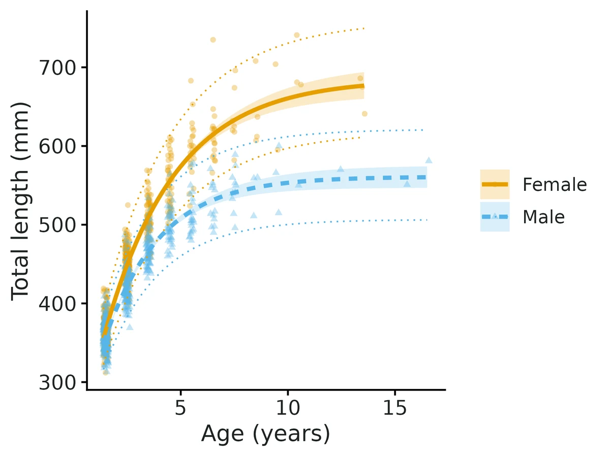
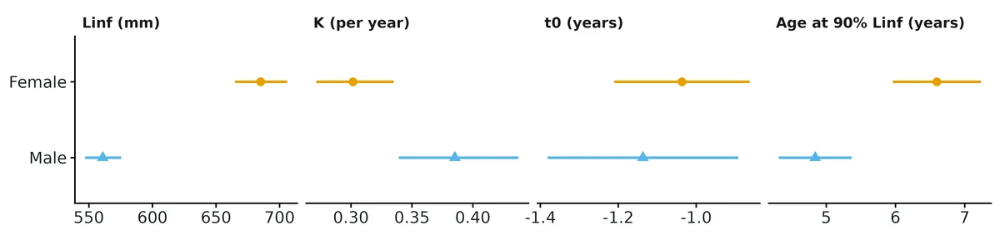
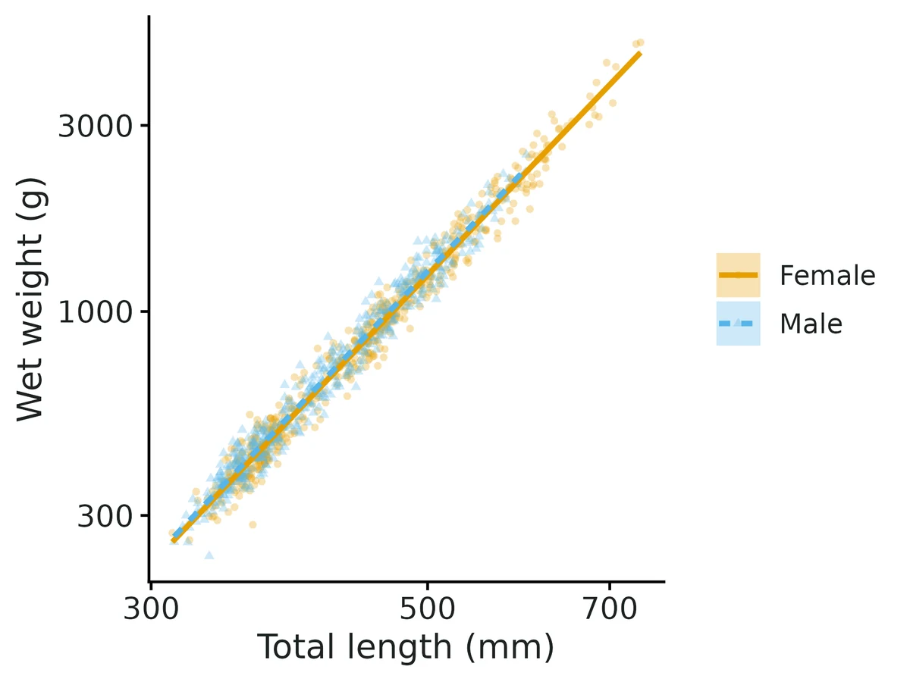
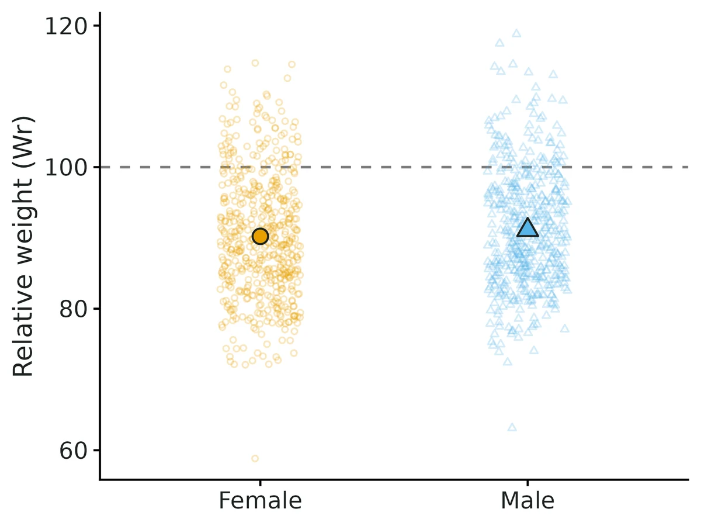

Fish growth (von Bertalanffy) and length-weight condition
Individual age-length data (otolith/scale ages) for one or more groups (populations, lakes, sexes, years); question is how fast fish grow, how large they get, at what age they approach maximum size, whether growth or condition differs among groups, or whether growth varies with a group-level covariate (temperature, density, year).
Is this the right analysis?
Use it when
Individual age-length data (otolith/scale ages) for one or more groups (populations, lakes, sexes, years); question is how fast fish grow, how large they get, at what age they approach maximum size, whether growth or condition differs among groups, or whether growth varies with a group-level covariate (temperature, density, year). Optional weights give the length-weight relationship and condition (Wr or Kn).
Not for
Length-frequency data without ages (needs ELEFAN/mixture methods), tag-recapture growth increments (Fabens model), back-calculated lengths from annuli (repeated measures per fish), stock assessment / mortality (use fisheries-stock), growth models other than von Bertalanffy (Gompertz, logistic, Richards are not implemented).
The data you need
One row per fish with age (years), length, group (optional), weight (optional); optional group-covariate table (one row per group).
What the example's main data file looks like:
| fish_id | year | sex | age | tl_mm | wt_g |
|---|---|---|---|---|---|
| SIM14-F-0001 | 2014 | female | 1 | 360 | 454.3 |
| SIM14-F-0002 | 2014 | female | 2 | 431 | 606.5 |
| SIM14-F-0003 | 2014 | female | 5 | 567 | 2065.4 |
| SIM14-F-0004 | 2014 | female | 1 | 344 | 416.4 |
| SIM14-F-0005 | 2014 | female | 2 | 472 | 1049.6 |
Not sure? Use the finder to compare modules.
The worked example
Do female and male walleye differ in growth and condition? (simulated autumn 2014 gill-net survey)
The question: Do females and males differ in how large they get, how fast they grow, and in condition (weight at length)?
The data are simulated, so the true answer is known and the analysis can be checked against it.
What the researcher typed
I have age, length, weight and sex for 1,000 walleye from an October 2014 gill-net survey (sim_walleye_2014.csv). Do females and males differ in growth and in condition? I'd like a report and figures I can put in a paper (CJFAS format).
Run it yourself
Download the example data below and unzip it.
Open the unzipped folder in Claude Code (see Install).
Paste the prompt above. The agent checks the files, writes a plan, runs planted truth, fits the model and writes the report. You can compare your results with the ones below.
Contains sim_walleye_2014.csv, the settings file (config_si.yaml), a description of the data and a step-by-step walkthrough.
Study design details
| n groups | 2 |
|---|---|
| groups | female (reference), male |
| n female | 530 |
| n male | 470 |
| n fish | 1000 |
| otolith age range | 1, 16 |
| age offset years | 0.5 |
| total mortality Z | 0.55 |
| prop weighed | 1.0 |
| years | 1 |
| error | multiplicative (lognormal) |
| engine | nls (Kimura LRT) |
Results from the example data

In plain language
- female: fish approach an asymptotic length (Linf) of 685 mm (95% CI 665 to 706) and grow toward it at K = 0.302 (95% CI 0.272 to 0.335) per year. They reach 90% of Linf (about 617 mm) at age 6.6 (95% CI 6.0 to 7.2) years.
- male: fish approach an asymptotic length (Linf) of 561 mm (95% CI 547 to 575) and grow toward it at K = 0.385 (95% CI 0.339 to 0.437) per year. They reach 90% of Linf (about 505 mm) at age 4.8 (95% CI 4.3 to 5.4) years.
- Linf in male is smaller than in female by 124 mm (95% CI 99 to 149). K in male is larger than in female by 0.084 per year (95% CI 0.025 to 0.142).
- Kimura (1980) likelihood-ratio tests: common linf chi-square = 81.7, df = 1, p < 0.0001; common k chi-square = 8.3, df = 1, p = 0.0041; common t0 chi-square = 0.4, df = 1, p = 0.51; all parameters common chi-square = 448.5, df = 3, p < 0.0001.
- Length-weight (1000 weighed fish): W = 1.19e-06 x L^3.340, with b 95% CI 3.308 to 3.372; this is positive allometry.
- At the same length, fish in male weigh 2.1% more than fish in female (95% CI +0.9% to +3.3%).
- Relative weight Wr by group: female 90.2 (95% CI 89.5-91.0, n = 530); male 91.1 (95% CI 90.4-91.9, n = 470).
More figures



Figures are the module's default publication figures, reduced for the web. The report also saves them as PDF and full-resolution PNG.
Planted truth at the example's design
Before trusting the example's results, the module was run on many simulated data sets with the same design and known true values. Each row is one quantity: did the method get it back? (What the thresholds are.)
Every quantity checked passed planted truth at this design.
17 of 17 rows pass.
Show the full recovery table (17 rows)
| Quantity | True value | Average estimate | Bias | Coverage | Result |
|---|---|---|---|---|---|
| age_at_90pct_Linf_female | 6.43 | 6.46 | +0.6% | 0.94 | ✓ PASS |
| age_at_90pct_Linf_male | 4.8 | 4.8 | -0.1% | 0.94 | ✓ PASS |
| condition_ratio_male_vs_female | 1.02 | 1.02 | -0.0% | 0.94 | ✓ PASS |
| K_female | 0.31 | 0.309 | -0.2% | 0.93 | ✓ PASS |
| K_male | 0.39 | 0.392 | +0.5% | 0.96 | ✓ PASS |
| K_diff_male_vs_female | 0.08 | 0.0825 | +3.2% | 0.94 | ✓ PASS |
| Linf_female | 680 | 681 | +0.2% | 0.95 | ✓ PASS |
| Linf_male | 560 | 559.5 | -0.1% | 0.94 | ✓ PASS |
| Linf_diff_male_vs_female | -120 | -121.5 | -1.3% | 0.95 | ✓ PASS |
| lw_a | 0 | 0 | -0.1% | 0.96 | ✓ PASS |
| lw_b | 3.34 | 3.34 | +0.0% | 0.96 | ✓ PASS |
| lw_residual_sd | 0.09 | 0.0897 | -0.4% | 0.94 | ✓ PASS |
| mean_weight_at_500_female | 1,246 | 1,246 | +0.0% | 0.95 | ✓ PASS |
| residual_sd | 0.05 | 0.0501 | +0.1% | 0.93 | ✓ PASS |
| t0_female | -1 | -1.01 | -0.6% | 0.93 | ✓ PASS |
| t0_male | -1.1 | -1.1 | -0.2% | 0.96 | ✓ PASS |
| t0_diff_male_vs_female | -0.1 | -0.0958 | +4.2% | 0.93 | ✓ PASS |
Limits that matter
- Linf needs old fish: 19 females and 54 males are beyond the age at 90% Linf here (enough); with < 5 such fish Linf is unreliable.
- Length-selective gear (e.g. gill nets) biases K (-14%) and t0 (-0.36 y) and drops coverage to 0.58; selectivity is not modelled (simulated data have none). Drop partly selected ages with real data.
- Single-parameter differences have low power: at this design power is 0.81 for a 0.08 difference in K and 0.10 for a 0.1-year difference in t0; a non-significant t0 test means not detectable, not equal.
- Not modelled: ageing error, individual growth variation beyond the residual, growth models other than von Bertalanffy.
All known limits from the module's validation record
- Linf needs old fish. With few fish near the asymptote (
hard_nls,hard_nimble_fixed) Linf, and so age at 90% Linf, is not identified: nls occasionally returns absurd Linf with wide intervals (age at 90% Linf fails the gate); the Bayesian model returns Linf biased +16 to +26% toward its prior. The module notes when < 5 fish are at or beyond the estimated age at 90% Linf; treat Linf as unreliable then and compare groups by length at ages that were sampled. - Length-selective gear biases growth (section 4): K -14%, t0 -0.36 years, coverage down to 0.58. Selectivity is not modelled; drop partially selected ages.
- Single-parameter group differences have low power (section 6): 0.59 for a 50 mm Linf difference with 250 fish per group. Use Kimura's joint test or whole-curve comparisons.
- Hierarchical SDs with few groups. At 10 groups the posterior median of the among-group SDs is biased +6 to +7% (passes); the posterior mean was +14% (failed). With 6 groups x 40 fish sd_log_Linf is biased +24.5% and FAILS the gate (section 5): with fewer than 10 groups (independent verification: 8 groups x 70 fish also FAILS, +14.7% and +16.2%), interpret the among-group SD of Linf through its upper 95% limit ("variation in Linf is at most about N%"), not as a point value. nlme's REML gives smaller SDs than the Bayesian median on the example data.
- Hierarchical convergence needs longer chains than the fixed-group model: on the example data (12 groups, 2106 fish) 10,000 iterations gave max R-hat 1.010 and min bulk ESS 335 (t0), short of the real-data standard, so the hierarchical default is 20,000 iterations with 5,000 burn-in.
- Not modelled: ageing error, individual growth variation beyond the residual, Linf-K correlation among groups, growth models other than von Bertalanffy, length-at-capture date beyond
age_offset.
Engine, references and full details
Engine: stats::nls with FSA starting values + Kimura (1980) likelihood-ratio tests (default), or nimble (Bayesian, fixed or hierarchical random group effects, covariates on log Linf and log K); stats::lm for length-weight.
References
- von Bertalanffy L (1938) A quantitative theory of organic growth. Human Biology 10:181-213.
- Beverton RJH, Holt SJ (1957) On the Dynamics of Exploited Fish Populations. Fishery Investigations Series II 19. HMSO, London.
- Kimura DK (1980) Likelihood methods for the von Bertalanffy growth curve. Fishery Bulletin 77:765-776.
- Helser TE, Lai HL (2004) A Bayesian hierarchical meta-analysis of fish growth: with an example for North American largemouth bass, Micropterus salmoides. Ecological Modelling 178:399-416.
- Ogle DH (2016) Introductory Fisheries Analyses with R. Chapman & Hall/CRC.
- Ogle DH, Doll JC, Wheeler AP, Dinno A. FSA: Simple Fisheries Stock Assessment Methods. R package 0.10.1.
- Nelson GA. fishmethods: Fishery Science Methods and Models. R package (growthlrt, used for the cross-check).
- Froese R (2006) Cube law, condition factor and weight-length relationships: history, meta-analysis and recommendations. Journal of Applied Ichthyology 22:241-253.
- Sprugel DG (1983) Correcting for bias in log-transformed allometric equations. Ecology 64:209-210.
- Le Cren ED (1951) The length-weight relationship and seasonal cycle in gonad weight and condition in the perch (Perca fluviatilis). Journal of Animal Ecology 20:201-219.
- Wege GJ, Anderson RO (1978) Relative weight (Wr): a new index of condition for largemouth bass. Pages 79-91 in New Approaches to the Management of Small Impoundments. AFS North Central Division Special Publication 5.
- Murphy BR, Brown ML, Springer TA (1990) Evaluation of the relative weight (Wr) index, with new applications to walleye. North American Journal of Fisheries Management 10:85-97.
- de Valpine P et al. (2017) Programming with models: writing statistical algorithms for general model structures with NIMBLE. Journal of Computational and Graphical Statistics 26:403-413.
- Pinheiro JC, Bates DM (2000) Mixed-Effects Models in S and S-PLUS. Springer (nlme, used for the cross-check).